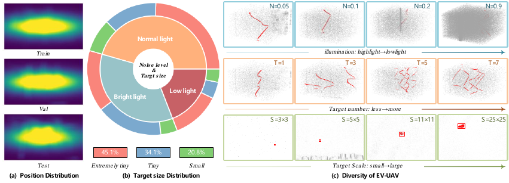
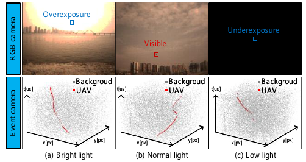
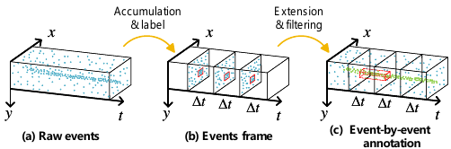
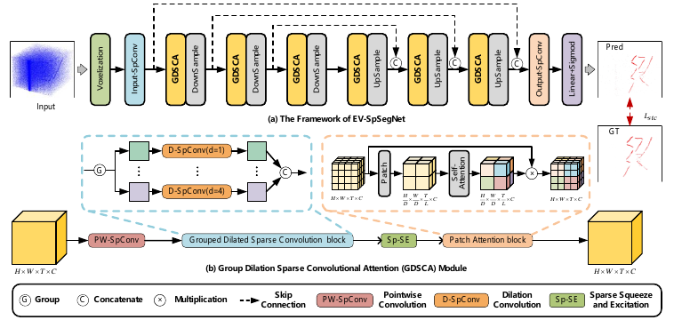
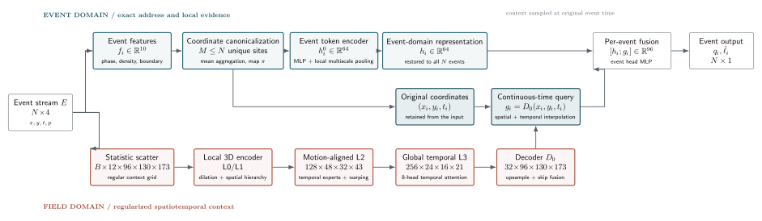
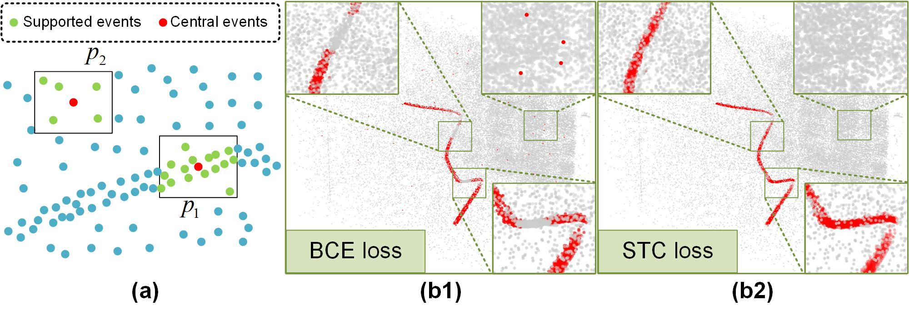

DICE
集合覆盖
目标事件占比极低时，逐点 BCE 容易被背景主导。Dice 直接优化预测集合与真值集合的重叠。
正类覆盖→集合 IoU
事件级微小目标分割中的
时空表示与连续时间推理
Dual-Domain Continuous-Time Modeling
for Event-Based Tiny UAV Segmentation

| Dataset | Scale | Label | UAV | BL/NL/LL | MS/MT | Year |
|---|---|---|---|---|---|---|
| VisEvent | 84×66 | BBox | × | ×/✓/✓ | ✓/× | 2023 |
| EventVOT | 129×100 | BBox | × | ×/✓/✓ | ✓/× | 2024 |
| EvDET200K | 68×45 | BBox | × | ×/✓/✓ | ✓/✓ | 2024 |
| F-UAV-D | — | BBox | ✓ | ×/✓/× | ×/× | 2024 |
| NeRDD | 55×31 | BBox | ✓ | ×/✓/× | ×/✓ | 2024 |
| EV-UAV | 6.8×5.4 | Seg | ✓ | ✓/✓/✓ | ✓/✓ | 2025 |
EV-UAV 同时提供 UAV-centric、multi-target、multi-scene 与 event-level segmentation，是首个事件级极小目标分割数据集。


事件相机报告亮度变化。一个样本是有序事件集，而区别于固定帧视频表示：
val_015 的真实统计。目标标签随事件存储；输入仍是原始坐标和时间。
评价约束：同时保持目标召回、事件重叠和低虚警。
点集表示保留时间，但长序列邻域易受背景活动干扰；帧化或体素化提供规则上下文，却引入时间量化误差。
因此需要独立上下文域，并将其连续查询回原始事件时刻。

保留每个 的事件地址。
在统计 3D 场上建立局部至全局的时空依赖。
在原始 处采样场特征并完成融合。

事件特征包含归一化 x/y/t/p、时间相位、边界距离、50 ms 全局密度和局部密度。它们不访问标签。
12 个统计量描述计数、极性、占据、bin 内时间残差、密度、时间相位与位置。96 个 bin 覆盖约 8 秒，提供上下文。
| 层 | C | T | H × W | 作用 |
|---|---|---|---|---|
| L0 | 32 | 96 | 130 × 173 | 局部 3D |
| L1 | 64 | 96 | 65 × 86 | 保留时间 |
| L2 | 128 | 48 | 32 × 43 | 自适应时间专家 + 对齐 |
| L3 | 256 | 24 | 16 × 21 | 全局时间注意力 |
对每条事件，将毫秒时间映射到场的连续位置：
场提供稳定上下文；事件 token 决定“在哪里、何时”输出。
调整事件时刻：上下文通过线性插值获得，避免将事件强制归入单一时间帧。
目标事件占比极低时，逐点 BCE 容易被背景主导。Dice 直接优化预测集合与真值集合的重叠。
3×3×9 稀疏核统计邻域支持，使连续曲线上的事件获得更高权重，孤立背景响应受到抑制。
将预测目标点与真值点映射到缩放后的 ，比较持久性图的连通分支与环结构，并只对阈值附近的 active events 回传梯度。

Fig. 5 · EV-UAV 的 STC 监督解释局部连续性；我们的 Topo 项在此基础上进一步维护全局拓扑结构。| 事件域 | 10D features → 64D token；scales (2,2,32), (4,4,128), (8,8,512) |
|---|---|
| 场域输入 | B × 12 × 96 × 130 × 173 |
| 金字塔 | widths [32,64,128,256]；depths [2,3,4,3]；L3 temporal heads = 8 |
| 监督 | STC 0.45；Dice 0.15；Topo 0.40 |
| 优化 | AdamW；lr 4×10⁻⁴；cosine schedule；19 epochs；AMP fp16；EMA |
Ubuntu 22.04 · Python 3.12.3 · RTX 4080 SUPER 32,760 MiB · driver 595.71.05 · PyTorch 2.12.1+cu130 · spconv 2.3.8 · CUDA 13.0 · sm_89
事件域保存精确地址，场域提供上下文，查询在原事件时刻完成融合。输出长度随 N 变化。
| 模块 | 回答的问题 | 关键张量 |
|---|---|---|
| event token | 事件时空地址是什么？ | N × 64 |
| field scatter | 局部与长时上下文如何形成？ | B × 12 × 96 × H × W |
| field encoder | 层级场如何扩展感受野？ | L0 → L3 → D0 |
| continuous query | 如何恢复原始时间地址？ | gi at ti |
上述四个模块构成 TrajectoryFieldNet 主干。
| 方法 | 发表 | 表示 | 时序 | IoU | ACC | Pd | Fa×10⁻⁴ | 参数 | 运行 ms |
|---|---|---|---|---|---|---|---|---|---|
| SSD | ECCV16 | Event Count | No | 25.31 | 28.56 | 26.31 | 486.63 | 25.2M | 2113 |
| Faster R-CNN | TPAMI16 | Event Count | No | 26.93 | 29.68 | 27.39 | 689.68 | 41.2M | 3962 |
| DETR | ICLR20 | Event Count | No | 30.35 | 33.63 | 31.64 | 631.37 | 39.8M | 3136 |
| YOLOV10-S | NeurIPS25 | Event Count | No | 32.55 | 33.39 | 32.18 | 589.67 | 7.3M | 1627 |
| EMS-YOLO | ICCV23 | SNN | Yes | 36.77 | 42.92 | 50.68 | 112.36 | 3.3M | 1229 |
| Spike-YOLO | ECCV24 | SNN | Yes | 43.94 | 48.26 | 59.62 | 55.38 | 69.0M | 1883 |
| GET | ICCV23 | Grouped Token | Yes | 40.31 | 48.91 | 60.73 | 46.35 | 18.4M | 2168 |
| RED | NeurIPS20 | Voxel Grid | Yes | 35.99 | 45.54 | 53.76 | 102.27 | 24.1M | 3427 |
| RVT | CVPR23 | Voxel Grid | Yes | 43.21 | 51.38 | 60.35 | 55.68 | 9.9M | 1737 |
| SAST | CVPR24 | Voxel Grid | Yes | 34.31 | 40.22 | 51.21 | 150.32 | 18.5M | 3075 |
| KPConv | ICCV19 | Points | Yes | 48.19 | 57.28 | 68.59 | 16.32 | 50.1M | 562 |
| RandLA-Net | CVPR20 | Points | Yes | 50.32 | 59.29 | 70.56 | 6.95 | 1.2M | 353 |
| COSeg | CVPR24 | Points | Yes | 51.89 | 60.93 | 71.32 | 9.21 | 23.4M | 364 |
| EV-SpSegNet | Ours | Points | Yes | 55.18 | 65.02 | 77.53 | 1.63 | 4.0M | 35.9 |
以上来自基线论文EV-SpSegNet的结果。
| 方法 | 数据划分 | Score | IoU | SegAcc | Pd | Fa | 参数 |
|---|---|---|---|---|---|---|---|
| TrajectoryFieldNet | public val | 0.943436 | 0.907962 | 0.942448 | 0.956321 | 0.051×10⁻⁴ | 3.584M |
| TrajectoryFieldNet | frozen final test | 0.942253 | 0.914074 | 0.971206 | 0.953927 | 0.066×10⁻⁴ | 4.610M |
| 配置 | Score | Δ | IoU | Pd | Fa×10⁻⁴ |
|---|---|---|---|---|---|
| Full | 0.9416 | — | 0.9179 | 0.9496 | 0.064 |
| w/o 局部 3D 模块 | 0.6843 | −0.257 | 0.5823 | 0.6542 | 0.326 |
| w/o 连续查询 | 0.8820 | −0.060 | 0.8150 | 0.8900 | 0.165 |
| w/o 全局时间注意力 | 0.9125 | −0.029 | 0.8850 | 0.9180 | 0.115 |
| w/o Topo | 0.9150 | −0.027 | 0.8650 | 0.9280 | 0.125 |
| w/o STC | 0.9220 | −0.020 | 0.8750 | 0.9320 | 0.110 |
EV-UAV 将微小目标检测表述为事件级语义分割，并揭示极端类别不平衡与长时空依赖问题。
精确事件 token 与规则 3D 时空场并行编码，并在每个原始事件时刻执行连续查询。
消融显示：去掉局部 3D 上下文 Score 从 0.94 暴跌 0.26（至 0.68），是性能支柱；连续时间查询再贡献 0.06，全局时间注意力、拓扑约束与 STC 监督各贡献 0.02–0.03。
谢谢 · 欢迎讨论
← / → 翻页 · O 目录 · N 备注 · F 全屏